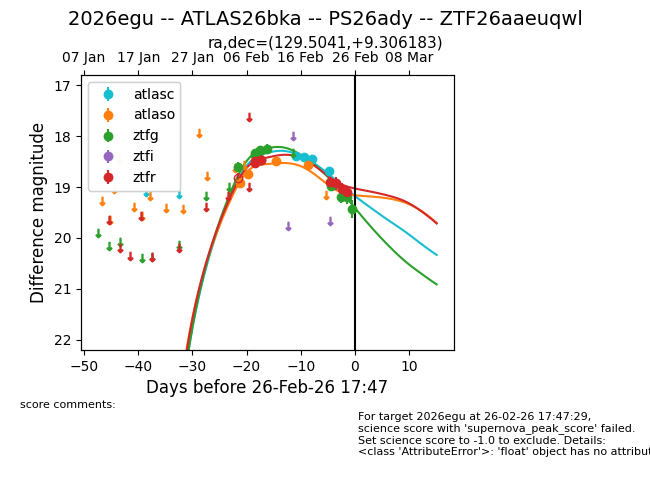
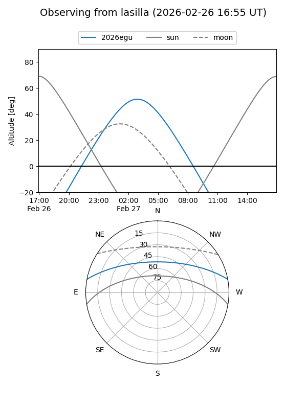
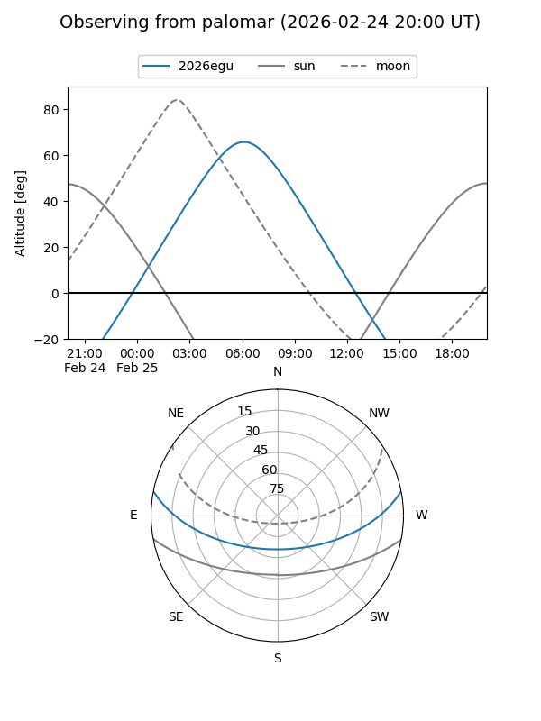
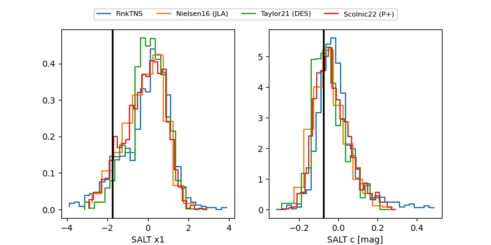

2026egu
Target 2026egu at 2026-02-26 17:48
Aliases and brokers:
FINK: link
Lasair: link
ALeRCE: link
TNS: link
YSE: link
alt names
ZTF26aaeuqwl (ztf,fink_ztf)
2026egu (tns,yse)
ATLAS26bka (atlas)
PS26ady (panstarrs)
Coordinates:
equatorial (ra, dec) = 129.5041,+9.30618
equatorial (HMS+DMS) = 08:38:00.97,+09:18:22.26
galactic (l, b) = (216.6861,+27.87884)
Flags:
Photometry:
last atlasc=18.68, atlaso=18.57, ztfg=19.43, ztfr=19.09
4 atlasc, 4 atlaso, 10 ztfg, 8 ztfr detections
Lightcurve

Visibility


Additional plots
